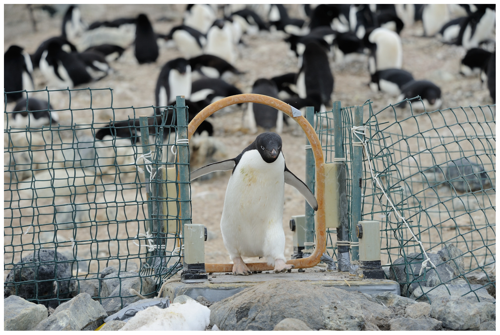

7 Advanced Quarto
Abstract
This set of notes introduces advanced Quarto concepts including params and embed-resources YAML headers, mathematical notation, cross references, and citations. The Quarto website includes more gems and is an example of high-quality technical documentation.
7.1 Review Exercise
Let’s start with an exercise to review content from the previous section of notes:
7.2 YAMl Header Specifications
7.2.1 params
As a review, Quarto documents have YAML headers, and YAML headers can contain many output specific settings. This YAML header creates an HTML document with code folding and a floating table of contents:
---
format:
html:
embed-resources: true
code-fold: true
toc: true
--- One key specification in the YAML header are parameters or params. Here is an example:
---
format: html
params:
state: "Virginia"
---Now state can be referred to anywhere in R code as params$state.
Parameters are useful for a couple of reasons:
- We can clearly change key values for a Quarto document in the YAML header. This could be a useful place to define constants and avoid magic numbers.
- We can create a template and programmatically iterate the template over a set of values with the
quarto_render()function andlibrary(purrr). This blog describes the idea and provides example code! The Mobility Metrics Data Tables and SLFI State Fiscal Briefs are key examples of this workflow. The code to create the Mobility Metrics Data Tables is publicly available on Github.
7.2.2 embed-resources
Warning
Unlike R Markdown, images and other content are not embedded in .html from Quarto by default. Be sure to include embed-resources: true in YAML headers to embed content and make documents easier to share.
Suppose we embed an image called image.png in a Quarto document called example.qmd, which, when rendered, creates example.html. If we don’t include embed-resources: true, then we will need to share image.png and example.html to see the embedded image. This is also true for other files like .css which is useful to provide custom styling for websites.
7.3 Organizing a Quarto Document
It is important to clearly organize a Quarto document and the constellation of files that typically support an analysis.
- Always use
.Rprojfiles. - Use sub-directories to sort images,
.css, data.
Later, we will learn how to use library(here) to effectively organize sub-directories.
7.4 Math Notation
This course uses probability and statistics. Occasionally, we want to easily communicate with mathematical notation. For example, it may be convenient to type that \(X\) is a random variable that follows a standard normal distribution (mean = 0 and standard deviation = 1).
\[X \sim N(\mu = 0, \sigma = 1)\]
7.4.1 Math Mode
Use $ to start and stop in-line math notation and $$ to start multi-line math notation. Math notation uses LaTeX’s syntax for mathematical notation.
Here’s an example with in-line math:
Consider a binomially distributed random variable, \(X \sim binom(n, p)\).
Here’s an example with a chunk of math:
\[ P(X = x) = {n \choose x} p ^ x (1 - p) ^ {n - x} \tag{7.1}\]
7.4.2 Important Syntax
Math mode recognizes basic math symbols available on your keyboard including +, -, *, /, >, <, (, and ).
Math mode contains all greek letters. For example, \alpha (\(\alpha\)) and \beta (\(\beta\)).
| LaTeX | Symbol |
|---|---|
\alpha |
\(\alpha\) |
\beta |
\(\beta\) |
\gamma |
\(\gamma\) |
\Delta |
\(\Delta\) |
\epsilon |
\(\epsilon\) |
\theta |
\(\theta\) |
\pi |
\(\pi\) |
\sigma |
\(\sigma\) |
\chi |
\(\chi\) |
Math mode also recognizes \(\log(x)\) (\log(x)) and \(\sqrt{x}\) (\sqrt{x}).
Superscripts (^) are important for exponentiation and subscripts (_) are important for adding indices. y = x ^ 2 renders as \(y = x ^ 2\) and x_1, x_2, x_3 renders as \(x_1, x_2, x_3\). Brackets are useful for multi-character superscripts and subscripts like \(s_{11}\) (s_{11}).
It is useful to add symbols to letters. For example, \bar{x} is useful for sample means (\(\bar{x}\)), \hat{y} is useful for predicted values (\(\hat{y}\)), and \vec{\beta} is useful for vectors of coefficients (\(\vec{\beta}\)).
Math mode supports fractions with \frac{x}{y} (\(\frac{x}{y}\)), big parentheses with \left(\right) (\(\left(\right)\)), and brackets with \left[\right] (\(\left[\right]\)).
Math mode has a symbol for summation. Let’s combine it with bars, fractions, subscripts, and superscipts to show sample mean \bar{x} = \frac{1}{n}\sum_i^n x_i, which looks like \(\bar{x} = \frac{1}{n}\sum_i^n x_i\).
\sim is how to add the tilde for distributed as. For example, X \sim N(\mu = 0, \sigma = 1) shows the normal distribution \(X \sim N(\mu = 0, \sigma = 1)\).
Matrices are are a little bit more work in math mode. Consider the follow variance-covariance matrix:
\begin{bmatrix}
s_{11}^2 & s_{12}\\
s_{21} & s_{22}^2
\end{bmatrix}\[ \begin{bmatrix} s_{11}^2 & s_{12}\\ s_{21} & s_{22}^2 \end{bmatrix} \]
This guide provides and exhaustive look at math options in Quarto.
Warning
Math mode is finicky! Small errors like mismatched parentheses or superscript and subscript errors will cause Quarto documents to fail to render. Write math carefully and render early and often.
7.5 Cross References
Cross references are useful for organizing documents that include sections, figures, tables, and equations. Cross references create hyperlinks within documents that jump to the locations of these elements. Linking sections, figures, tables, or equations helps readers navigate the document.
Cross references also automatically number the referenced elements. This means that if there are two tables (ie. Table 1 and Table 2) and a table is added between the two tables, all of the table numbers and references to the tables will automatically update.
Cross references require two bits of code within a Quarto document:
- A label associated with the section, figure, table, or equation.
- A reference to the labelled section, figure, table, or equation.
Labels are written in brackets or as arguments in code chunks, and begin with the the type object being linked. References begin with @ followed by the label of object being linked.
7.5.1 Sections
Linking sections helps readers navigate between sections. Use brackets to label sections after headers and always begin labels with sec-. Then you can reference that section with @sec-.
The cross references shows up like this: See ?sec-review if you are totally lost.
It can be helpful to turn on section numbering with number-sections: true in the YAML header. Additionally, Markdown has a native method for linking between sections.
7.5.2 Figures

We can reference figures like Figure 7.1 with @fig-penguins.
7.5.3 Tables
We can link to tables in our documents. For example, we can link to the greek table with @tbl-greek Table 7.1.
7.5.4 Equations
We can link to equations in our documents. For example, we can link to the binomial distribution earlier with @eq-binomial Equation 13.4.
7.6 Citations
7.6.1 Zotero
Zotero is a free and open-source software for organizing research and managing citations.
Digital Object Identifier (DOI)
DOIs are persistent identifiers that uniquely identify objects including many academic papers. For example, 10.1198/jcgs.2009.07098 identifies “A Layered Grammar of Graphics” by Hadley Wickham.
7.6.2 Zotero Integration
Zotero has a powerful integration with Quarto. In practice, it’s one click to add a DOI to Zotero and then one click to add a citation to Quarto.
RStudio automatically adds My Library from Zotero. Simply switch to the Visual Editor (top left in RStudio), click “Insert”, and click “Citation”. This will open a prompt to insert a citation into the Quarto document.
The citation is automatically added with parentheses to go at the end of sentences. Delete the square brackets to convert the citation to an in-line citation.
Inserting the citation automatically adds the citation to the references section. Deleting the reference automatically deletes the citation from the references section.
Zotero Groups are useful for sharing citations and Zotero Group Libraries need to be added to RStudio. To set this up:
To set this up, in RStudio:
- Go to Tools and select “Global Options”
- Select “RMarkdown” and then click “Citations”
- For “Use Libraries” choose “Selected Libraries”
- Select the group libraries to add